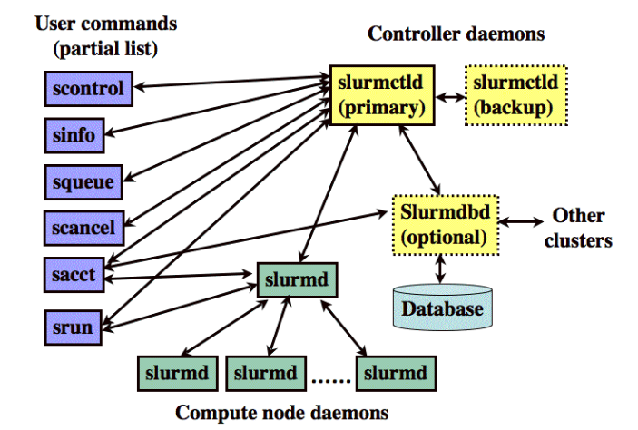

Slurm Workload Manager
SLURM: Simple Linux Utility for Resource Management
a free and open-source job schedular for Linux and Unix-like kernels, used by many of the world’s supercomputers and computer clusters.
Key functions:
- allocating exclusive and/or non-exclusive access to resources (computer nodes).
- providing a framework for starting, executing, and monitoring work on a set of allocated nodes.
- arbitrating contention for resources by managing a queue of pending jobs.
slurmctld: centralized manager, monitor resources and work.
slurmd: compared to a remote shell – it waits for work, executes that work, return status, and waits for more work.
slurmdbd: Slurm DataBase Daemon, record accounting information for multiple Slurm-managed clusters in a single database.

- sbatch – Submit script for later execution (batch mode)
- salloc – Create job allocaton and start a shell to use it (interactive mode)
- srun – Create a job allocation (if needed) and launch a job step (typically an MPI job)
- sattach – Connect stdin/out/err for an existing job or job step
contents of a batch script
- SBATCH directives
- Environment setup
- Cpy data to scratch (for heavy IO loads)
- Run your job (MPI if need be)
- Copy data from scratch
- Remove temporary files and scratch data
For e.g. myjob.slurm
- SBATCH directives
first line: tell how to run the script
https://slurm.schedmd.com/sbatch.html
- nodes partition
1 | sinfo |
- what jobs are running
1 | squeue |
–time: time running
-N –nodes: number of nodes
-n –ntasks: number of tasks
-p –partition: request a specfic partition for the resource allocation.
-o –output: connect the batch script;s standard output to the file.
-e -error: connect the batch script’s standard eroor directly to the file.
–mem: specify the real memory required per node.
1 |
|
- Environment setup
add modules
1 | module add c3ddb/bamtools/2.4.0 |
Also we can source activate $env.
- Run job
the following is a matlab script
1 | matlab -r build_experiment_directories |
Tips: attach job id: %j, $SLURM_JOB_ID, e.g.
1 | #SBATCH -o qe-%j |
- Use array to submit and manage collections of similar jobs quickly and easily
SLURM_ARRAY_TASK_ID will be set to the job array index value. SLURM_ARRAY_TASK_COUNT will be set to the number of tasks in the job array.
E.g.
1 | #SBATCH --array=1-50 |
submit the job
So, in shell, run the commad: sbatch myjob.slurm. Submit the job and see the job state.
1 | squeue -u username |
- Job state codes
PD: pending. Job is awaiting resource allocation.
R: running. Job currently has an allocation.
CG: Job is in the process of completing. Some processes on some nodes may still be active.
You don’t immediately see the output files because there is slight delay between the file systems being written to and then updating on the client.
- cancel the job
1 | scancel jobid |
If not in slurm, just kill jobid.
- look up job info
1 | sacct -j jobid |
我们可以在.bashrc自定义一下命令
1 | alias sa='sacct --format=JobName,JobID,reqmem,maxrss,elapsed,state,reqcpu,ncpus,ExitCode' |
如此使用sa -j jobid输出上述相关信息（JobName,JobID,reqmem,maxrss,elapsed,state,reqcpu,ncpus,ExitCode）。